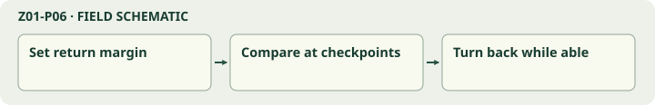

Z01-P06 · Survival fundamentals
Set a turnaround before departure
Preserve the time and energy needed to return.
When it applies · An out-and-back trip where conditions, group speed or daylight can change.
Equipment · Watch, map and reliable forecast or local advisory.

Actions
- Identify a decision point and latest turnaround time. Build in daylight and delay margin for the slowest group member.[E01, ED]
- At each reliable checkpoint compare actual progress and conditions with the plan. Recalculate when the return route or pace changes.[E01, ED]
- Turn back early if visibility, access, group condition or the return margin deteriorates and the return route is known safe.[T06, ED]
Verify · The group can name the trigger and the place where it will reassess.[ED]
Stop or change course · If the return route is no longer safe or known, use the stay/signal decision rather than a guessed shortcut.[T06]
Evidence and editorial notes
- E01 · Minnesota DNR · Safety in State Forests
- Before your trip and while visiting · state-forest travel
Know the route, check conditions, carry navigation and safety equipment and share trip details.
Primary source · checked 2026-11-24 - T06 · NPS · Outdoor Emergency Plan
- If you get lost or hurt; call for help · Outdoor US emergency
Communicate location, last known point, situation and needs. Stay put when unable to establish a safe route unless immediate danger requires movement.
Primary source · checked 2026-11-24
Source lineage · B014 P18 and B012 P02.